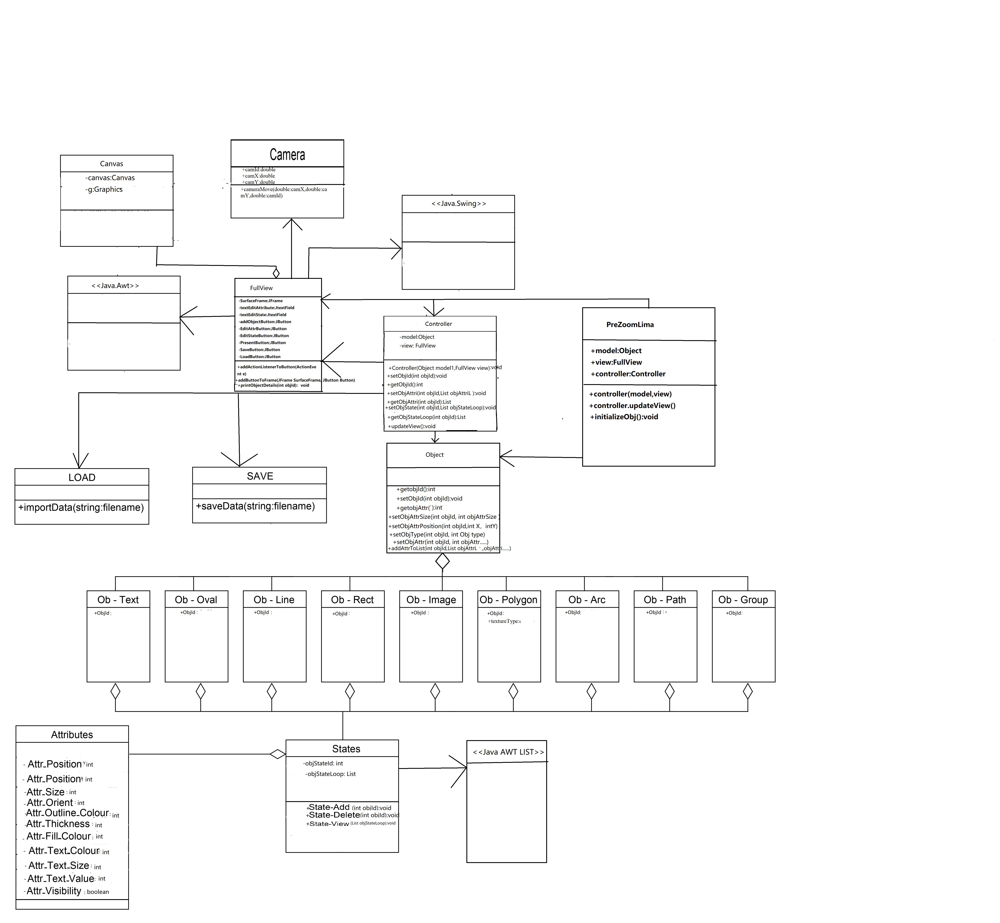
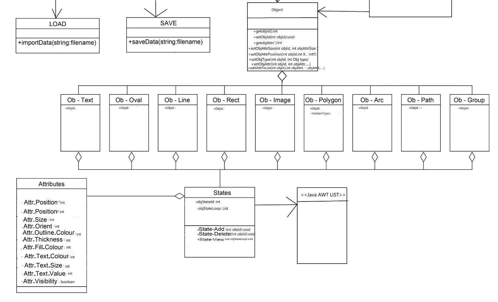
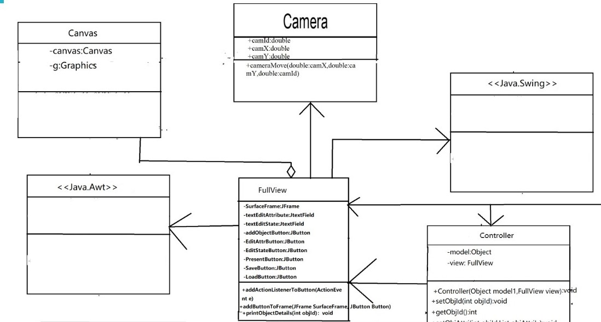
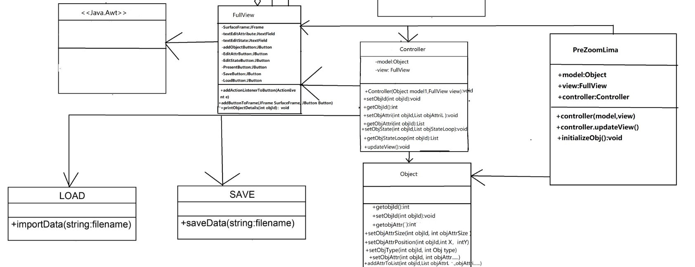
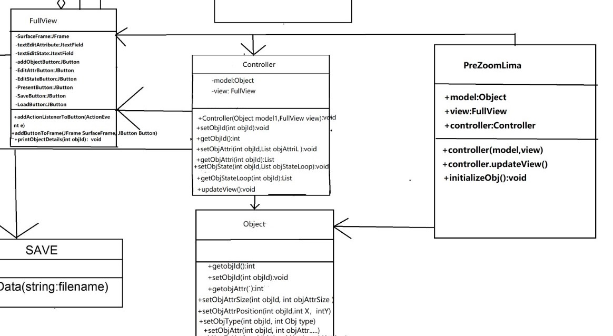

Lima Group
Hello Everyone! We are Lima Group
Group Member:Xuchen Sun,Nikhil Kulkarni Rajendra, Rahul Bafna,Di Chang.
Task3.a.1 UML

Task3.a.2 There are 4 packages
Object: a package to generate objects
FullView: a package to define how object will be showed in screen
Controller: sent objects to view
PreZoomLima: The main function is in this package and use previous 3 class to generate three objects and print them in screen
LimaPreZoom:
1 use previous three packages to generate a new model, a new controller and a new view.
2 use controller to send objects to view, and print objects in screen
Task3.a.3 AWT and Swing
AWT and Swing: Using JFrame JButton JTextField to create GUI and Canvas and define the logic
There are include in default library
Task3.a.4 Class Diagram
Package: Object

Package: FullView

Package: Controller

Package: PreZoomLima

Task3.a.5 Class Description
Class Object: a class to generate objects
Class FullView: a package to define how object will be showed in screen
Class Controller: sent objects to view
Class PreZoomLima: The main function is in this class and use previous 3 class to generate three objects and print them in screen
Class Camera: a class to define the Camera details
Class Save and Load: two class to define save and load data
Interace AWT and Swing: define JFrame,JButton,JTextField,and Canvas
Task3.b Test
Test for class Object: generate a new object from Object define the details and check if it works correctly
Test for class FullView: Part1,it is better to generate a new object from FullView,and check if JButton,JFrame,JTextField work correctly
Test for class FullView: Part2,there is an important function in this class so it is good to generate an object from this class and check if the canvas and this important function work correctly
Test for class Controller:There are 4 main function in this class so it is good generate a new object from Controller and check if the four functions can works correctly to exchange data
Test for class PreZoomLima: The main function of this project is in here, so it is good to generate 3 objects from previous 3 class and check if class PreZoomLima can work correctly
Test for other class Object: The other class is still in programming, therefore the test will be finished lately
Task3.c Compile and execute
Compiling and excuting codes will be done in IDE it will be automatic and in this case what we should concentrate on is to use "New" to generate objects
The most important thing is to avoid the conflicts in heap and stack
I use command line to explain the compiling and executing
Compile: Using javac command. Using javac command to generate several files of all class.For example,after using javac command, the Object.java will be Object.class
Executing: Using java.exe. Firstly JVM will load the class file "Object.class, FullView.class, Controller.class ,PreZoomLima.class " into memory
When loading is finished, the main function in PreZoomLima has a specific address in memory.
At last the main function will use the data in heap and stack to run all project.